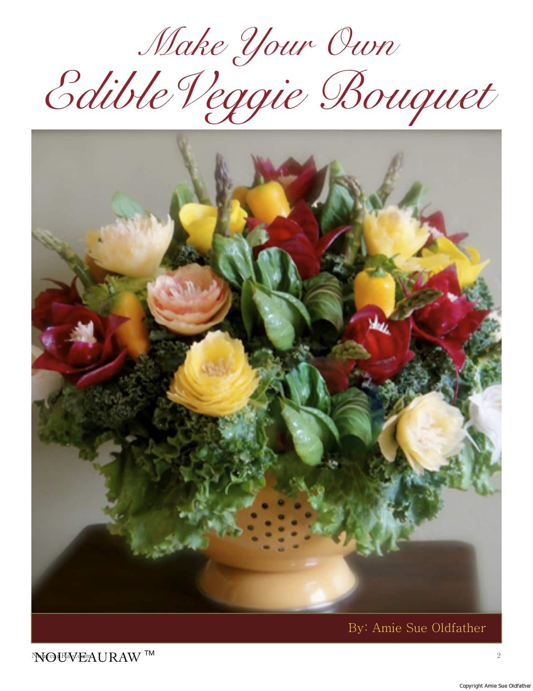

Important Changes Taking Place on NouveauRaw
Hello there, my loyal readers,
 If you are long-time follower of NouveauRaw, you may have noticed a few changes that we have made this summer. First of all, we finally, after eight years, have an official NouveauRaw logo!! That may not seem all that exciting but any of you who have branded your own products, sites, business, etc. understand just how amazing it feels. The design is based on the “Golden Ratio” a design element found in much of nature. Which is why the tagline is “in sync with nature” Which, of course our website has always been.
If you are long-time follower of NouveauRaw, you may have noticed a few changes that we have made this summer. First of all, we finally, after eight years, have an official NouveauRaw logo!! That may not seem all that exciting but any of you who have branded your own products, sites, business, etc. understand just how amazing it feels. The design is based on the “Golden Ratio” a design element found in much of nature. Which is why the tagline is “in sync with nature” Which, of course our website has always been.
Next, due to many requests… we set the site up to where it automatically alphabetizes the recipes by title rather than having the latest recipe at the top of each category. This created an interesting “stir” of things because it brought a lot of old recipes to the top which allowed you to witness my photography in its baby stages. Shew…I am working on remaking those recipes for better photos, and cleaner instructions… but for now… let it inspire you, that with time and practice, we all can get better with whatever we choose to do.
We also inserted what is referred to as “breadcrumbs”, which gets its name from the story of Hansel and Gretel where they left crumbs behind to help them find their way home through the forest. In our case breadcrumbs are a type of navigational aid which will keep track of where you have been as you explore our website. Personally, I love this feature.
Another addition is something called Contextual Related Posts. There at the bottom of the page you will find other posts that are, in one way or another, associated with the recipe or technique you are presently viewing. My hope is that this will prompt further exploration.
But now, onto a major change for NouveauRaw.
Let me start by saying that one of the great joys in my life has been creating this website. All from what started as just a place to share my recipes with friends and family. Now that place has expanded into something shared by thousands of people from all over the world – and that continues to fuel a passion in me that hasn’t flickered even once in these past eight years.
With this expansion came the need for more bandwidth and tech support to accommodate all the users and the rich content of photos. The community for raw foods has grown by leaps and bounds since I first started dabbling in it. And with the amazing increase of like-minded people coming to my site, the demand for new recipes, techniques, and support has also grown.
Over time, as the cost of running the site continually increased, Bob and I have looked for ways to support NouveauRaw. The options were always limited as I held my ground on not allowing any advertising on the site. You see, NouveauRaw is a huge part of my life, it’s my virtual home, I live there, it’s a place that needs to be calm and peaceful. One reason I don’t visit a lot of sites or blogs or even online stores is that I personally can’t handle all the flashing banners, pop-ups and advertisers “yelling” at me while I browse .
We even tried going the donation route, and as wonderful as it was, because of the few who actually did donate… it wasn’t even close to touching the expenses of running things. It costs us roughly $15,000 a year to host the site and for tech-support, and that doesn’t even include my time, (and this is my full-time job), or Bob’s time, let alone the cost of ingredients and equipment.
So, after considering what few options were available, we have decided the best thing for all concerned is to turn NouveauRaw into a subscription-based site. Starting Monday next week, the 12th, there will be a monthly charge of $5.99 (about same price as a 5 lb. bag of organic carrots) to access the membership part of my site. There will however still be free content. Throughout the site you will still find over 100 FREE recipes, techniques, and ingredient information postings for non-members to try and to learn from. Look for the our upcoming email with the “join now” link.
This way we can continue to offer what we consider to be one of the top gourmet raw sites on the web at a minimal cost and still stay free of ads etc. Also there are many things we want to add to NouveauRaw to make it even better and your support will make that possible. To help with that goal there will be a place on our new forum for your suggestions so you can tell us what you would like to see. .
This has been a wonderful journey, and it has been great having all of you along for the ride.
Here is a list of some of the new and current features of NouveauRaw.com. With more to come in the future. And I will see you there. :)

As a bonus for those of you who have been my email subscribers, anybody who signs up by September 30th will receive a free copy of my “Edible Veggie Bouquet” ebook.- Over 1,200 original whole-food, nutrient-packed, tried-and-tested recipes.
- Great “cooking” isn’t just about recipes, it’s also about techniques, I will continue to cover a wide variety of great techniques, which includes blending, dehydrating, spiralizing, marinating, and ideas for giving food that cooked appearance while still maintaining the nutrients and more.
- NEW: A forum where you can connect with like-minded people, building a community of support and encouragement.
- NEW: Our favorites program will now save your favorite recipes on our server so no matter what computer you use, your favorite recipes will always be available.
- Printable recipe PDFs – Customize and create your own offline raw recipe cookbook.
- Weekly emails where I share the latest and greatest recipes that I continue to create while on our culinary journey.
- I will continue to personally answer your comments and questions.
- No ads, flashing banners, or other annoying things that don’t have anything to do with your interests.
If you have any questions, please contact me: [email protected]
Thank you so much for your support, and many blessings. amie sue
Sept 5th, 2016
© AmieSue.com